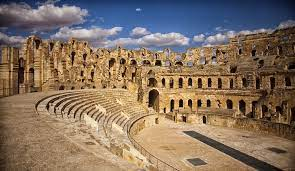

Traditions & food
Découvrir les monuments de Tunisiecomme Mosquée de Kairouan, kasr ElJem Plusieurs plats tunisiennes comme couscous, keftegi, lablabi... Découvrir la nature dde Tunisie!

Culture
Plas traditionnels
Nature
les agences de voyages